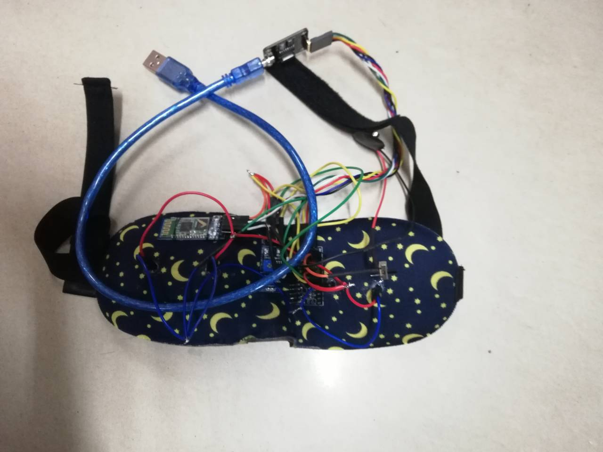

我们这款产品主要涉及软硬件结合方面，我们使用Atmega328p开发板及相关开发程序，同时采用多种传感器，比如体温传感器，烟雾浓度传感器，血氧传感器等等，以蓝牙模块为传输枢纽，涉及串口通讯原理，以实现软硬件之间的相互通讯。
1. 体温传感器:能够实时测量人体皮肤温度。
2. 血氧传感器：能够实时监测人体大致心跳数据。
3. 普通LED灯: 能够受程序控制而光强逐渐增大从而实现光唤醒。
4. 主控板：一个简单的微型处理器，是控制眼罩实现功能的主脑。
5. 蓝牙模块：实现手机端软件与眼罩的通信。
1. 串口通信原理。
2. 传感器引脚调用原理。
3. 基本电路连接原理。
4. 硬件焊接技术。
